Les Origines — Bonneville Beach et le Record du Monde
Quand Triumph bat la vitesse du vent dans le désert de l'Utah
Tout commence dans le désert. Les Salins de Bonneville, dans l'État de
l'Utah aux États-Unis, sont une étendue plate et dure de plusieurs dizaines de kilomètres
de sel cristallisé, résidu d'un lac préhistorique asséché depuis des millénaires. Cette
surface parfaitement plane est depuis les années 1930 le terrain de jeu de ceux qui
veulent aller plus vite que quiconque n'est jamais allé.
En septembre 1956, le pilote américain Johnny Allen
grimpe à bord d'un engin extraordinaire : un carénage en aluminium en forme de torpille,
propulsé par un moteur Triumph Thunderbird de 650 cm³ préparé par le
mécanicien de génie Jack Wilson. La machine est baptisée "The Texas Ceegar"
— le cigare texan — en référence à sa forme allongée.
Ce jour-là, Johnny Allen et son Triumph parcourent le kilomètre lancé à la vitesse
stupéfiante de 345,8 km/h — soit 214,17 mph. Un
nouveau record mondial de vitesse pour une moto. L'exploit est retentissant. La presse
américaine s'emballe. Triumph est à la une des journaux des deux côtés de l'Atlantique.
La FIM (Fédération Internationale de Motocyclisme) contestera pendant quelques années
l'homologation officielle de ce record pour des raisons techniques, mais la réalité
sportive est indéniable : une Triumph vient d'établir la marque de vitesse absolue
pour une moto dans le monde entier. Et Triumph entend bien capitaliser sur cet exploit
extraordinaire.
En 1959, Triumph baptise son nouveau modèle phare en hommage direct
à cet endroit et à cet exploit : la Bonneville T120. Un nom qui allait
devenir le plus célèbre de toute l'histoire de la moto.
1959 — La Bonneville T120 : La Naissance d'un Mythe
La moto parfaite d'une époque parfaite
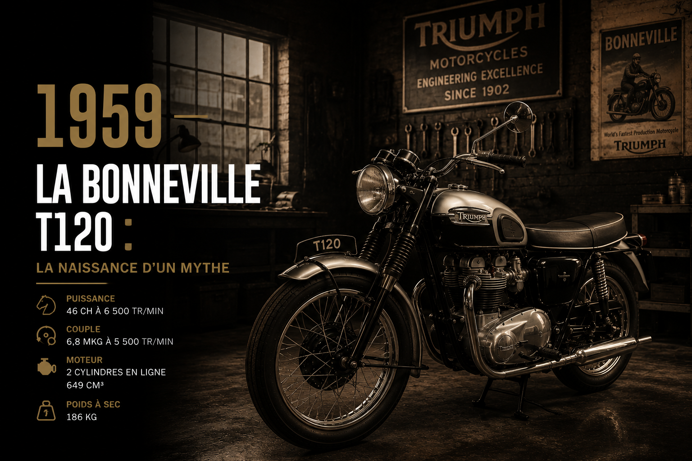
En 1959, Triumph lance la Bonneville T120 et change
l'histoire de la moto pour toujours. Ce modèle est une évolution directe de la T110
Tiger, elle-même dérivée du Speed Twin d'Edward Turner, mais poussée dans ses derniers
retranchements pour offrir les meilleures performances disponibles sur une moto de série.
Le moteur est le bicylindre parallèle de 649 cm³ caractéristique de
Triumph, mais dans sa configuration la plus affûtée. Deux carburateurs Amal
Monobloc alimentent des culasses à haute compression. La puissance atteint
46 chevaux — un chiffre impressionnant pour l'époque, et surtout pour
une moto de ce gabarit. La Bonneville T120 dépasse les 190 km/h en
version standard, ce qui en fait l'une des motos de production les plus rapides du monde.
Sa silhouette est la définition même de la beauté classique britannique : un réservoir
en forme de goutte d'eau aux courbes parfaites, une selle en tandem enveloppante, des
ailes en acier chromé aux galbes harmonieux, un guidon droit qui invite à la position
sportive. Pas un gramme de superflu, pas un centimètre de trop. Chaque ligne est
justifiée, chaque courbe est nécessaire. C'est la pureté absolue de la forme suivant
la fonction.
Le son du bicylindre Triumph est lui aussi immédiatement reconnaissable : un battement
régulier et profond à bas régime, qui monte en intensité et en urgence quand les tours
grimpent, pour se transformer à pleine charge en un grondement plein et mécanique qui
résonne dans les tripes. Ce n'est pas le cri strident d'un quatre cylindres japonais
— c'est quelque chose de plus charnel, de plus humain, de plus vivant.
La presse spécialisée est immédiatement conquise. Les premiers essais sont dithyrambiques.
Les clients se précipitent chez les concessionnaires. La Bonneville T120 devient en
quelques mois la moto la plus désirée du monde. Elle sera produite, dans diverses
évolutions, pendant vingt-cinq ans consécutifs — un record de longévité
extraordinaire pour un modèle de série.
Les Années 1960 — Hollywood, le Rock et la Conquête Culturelle
La Bonneville entre dans la légende du XXe siècle
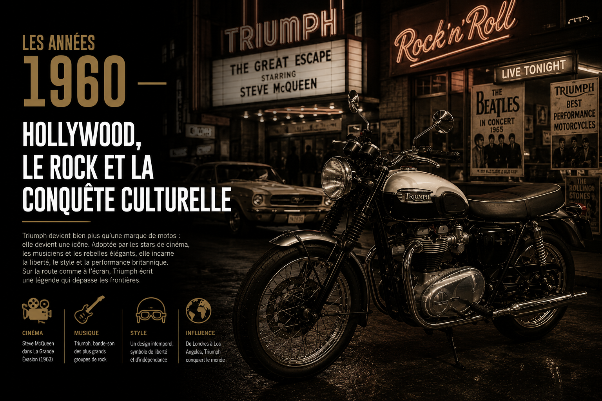
Les années 1960 transforment la Bonneville de simple moto en véritable icône culturelle.
À Hollywood d'abord, où les stars du grand écran en font leur monture de prédilection.
Dans les studios d'enregistrement ensuite, où les musiciens qui définissent une époque
roulent en Triumph. Dans les rues enfin, où la Bonneville devient le symbole d'une
jeunesse qui refuse les conventions et choisit sa propre voie.
En 1963, Steve McQueen rend la Bonneville immortelle
dans La Grande Évasion. La scène du saut de barbelés sur une Triumph TR6 Trophy
— cousine proche de la Bonneville — est l'une des images les plus reproduites de l'histoire
du cinéma. McQueen n'est pas un acteur qui joue à être motard : il est motard dans la vie,
possède une collection impressionnante de Triumph, et monte lui-même une grande partie des
cascades. Sa passion pour la marque est totale et authentique.
La même année, Bob Dylan est photographié portant un t-shirt Triumph sur
la pochette de son album Highway 61 Revisited. L'image fait le tour du monde.
Dylan, symbole d'une contre-culture en pleine ébullition, choisit Triumph comme emblème.
C'est une publicité que la marque n'aurait pas osé rêver.
Elvis Presley roule en Bonneville et en fait cadeau à ses amis. Marlon
Brando, déjà associé à la Thunderbird depuis L'Équipée Sauvage en 1953,
continue de fréquenter les motos Triumph. James Dean est photographié
sur sa Triumph dans les rues de Los Angeles. La liste est longue, et elle dit tout de
la place de la Bonneville dans l'imaginaire de l'époque.
Sur les routes américaines, la Bonneville est partout. Les clubs de motards l'adoptent.
Les universités en sont pleines. Les campings du week-end résonnent de son bicylindre.
Elle incarne la liberté, l'aventure, la rébellion douce d'une génération qui veut vivre
vite et intensément. Elle n'est plus seulement une moto — elle est un mode de vie.
1960–1973 — L'Évolution Continue : de la T120 à la T140
Vingt ans de perfectionnement d'une formule parfaite
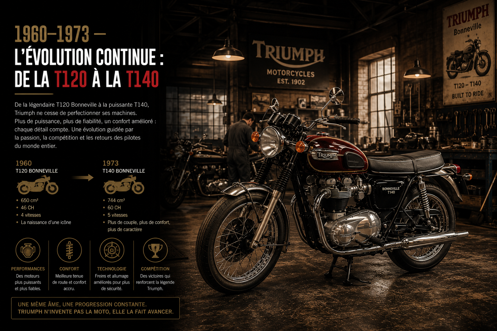
Pendant toute la décennie 1960 et le début des années 1970, la Bonneville évolue
continuellement, millésime après millésime, sans jamais trahir son essence. C'est un
travail d'orfèvre patient, une amélioration progressive qui respecte l'équilibre
fondamental de la machine.
En 1963, la cylindrée passe à 654 cm³ grâce à un
alésage légèrement augmenté. La puissance grimpe à 49 chevaux. Les
freins à tambour sont progressivement améliorés. La fourche avant gagne en rigidité.
Les finitions s'améliorent. Chaque année apporte son lot de petits progrès qui rendent
la machine un peu plus fiable, un peu plus performante, un peu plus agréable à vivre.
En 1969, une Bonneville préparée par des passionnés participe à la
célèbre course de vitesse de Thruxton en Angleterre et remporte
l'épreuve — donnant naissance à un autre modèle légendaire de la famille Triumph.
La compétition nourrit la série, et la série inspire la compétition.
En 1973, Triumph opère la dernière grande évolution mécanique de
la Bonneville classique avec la T140 Bonneville. La cylindrée passe
à 724 cm³, la plus grande jamais utilisée sur ce modèle. La puissance
atteint 52 chevaux. La T140 reçoit également une boîte de vitesses
à cinq rapports — une amélioration significative sur le plan du confort et de la
polyvalence. Le frein avant à disque fait son apparition, remplaçant enfin l'antique
tambour.
La T140 sera produite jusqu'en 1983, date de la fermeture tragique
de l'usine de Meriden. Elle est la dernière Bonneville de l'ère classique, celle qui
ferme le premier et le plus beau chapitre de l'histoire du modèle.
Les Éditions Spéciales des Années 1970 — Silver Jubilee et America
La Bonneville habille ses plus beaux atours
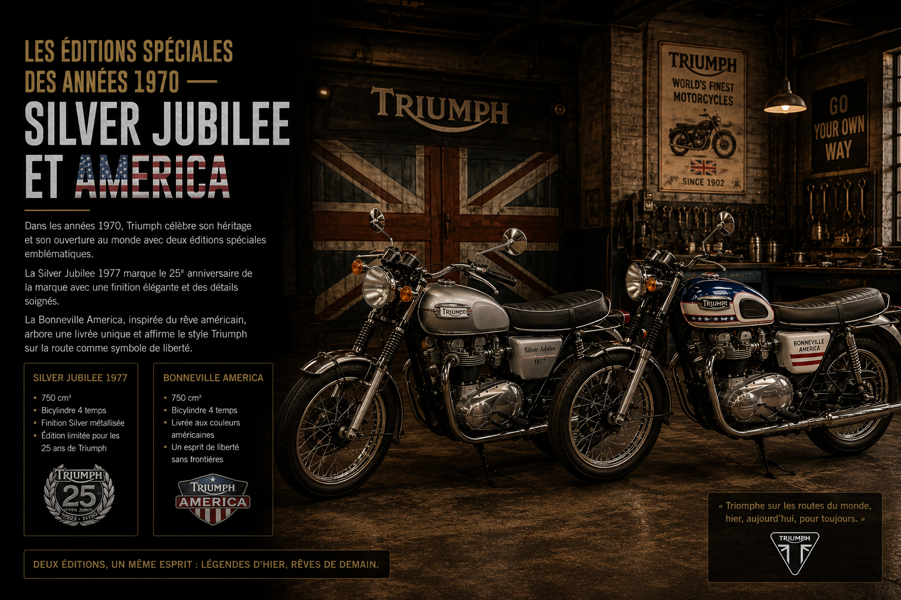
Les années 1970 sont difficiles pour l'industrie moto britannique, mais elles donnent
naissance à quelques-unes des éditions spéciales les plus belles et les plus recherchées
de l'histoire de la Bonneville.
En 1977, pour célébrer le Jubilé d'Argent de la Reine
Élisabeth II, Triumph lance la Bonneville Silver Jubilee. Cette édition
limitée à 1 000 exemplaires — dont 740 destinés au marché américain —
arbore une livrée somptueuse en rouge, blanc et bleu, les couleurs du drapeau britannique.
Les pièces chromées sont traitées avec un soin particulier. La selle reçoit un passepoil
rouge. Chaque moto est livrée avec un certificat d'authenticité numéroté.
La Silver Jubilee est immédiatement un succès. Les 1 000 exemplaires trouvent preneur
en quelques semaines. Aujourd'hui, un exemplaire en parfait état de conservation est
un objet de collection d'une valeur considérable, prisé par les amateurs du monde entier.
La même période voit apparaître la Bonneville America, une version
spécifiquement développée pour le marché américain avec un guidon plus haut, une position
de conduite plus relâchée, et des coloris adaptés aux goûts américains. Cette version
confirme l'importance cruciale des États-Unis dans l'histoire commerciale de la Bonneville —
le marché américain a toujours été le premier client de la machine britannique.
1983–2000 — L'Interruption et l'Attente
Seize ans de silence avant la renaissance
En 1983, l'inévitable se produit. La coopérative ouvrière de Meriden,
qui avait tenu bon pendant huit ans contre vents et marées, ferme définitivement ses
portes. La dernière Bonneville sort de la chaîne. L'Angleterre perd sa moto la plus
emblématique. Le monde perd quelque chose d'irremplaçable.
Les seize années qui suivent sont un long silence douloureux pour les passionnés de la
marque. John Bloor rachète le nom Triumph en 1983 et travaille secrètement à Hinckley
pour préparer la renaissance, mais la nouvelle gamme qui sort en 1990 ne comprend pas
immédiatement de Bonneville. Les nouvelles Triumph sont des machines modernes, à trois
cylindres, orientées sport et tourisme. Excellentes, mais pas des Bonneville.
Les anciens propriétaires de Bonneville gardent leurs machines comme des reliques. Les
clubs de collectionneurs se multiplient. Un marché de pièces détachées spécialisé se
développe. La passion pour la Bonneville ne s'éteint pas pendant ces seize ans d'absence
— elle couve, intense et têtue, attendant son heure.
Et pendant ce temps, des dizaines de milliers de personnes dans le monde entier continuent
de se demander : "Est-ce que Triumph va un jour refaire la Bonneville ?" La réponse
allait venir, et elle allait valoir l'attente.
2001 — La Renaissance : La Nouvelle Bonneville T100
Le retour de la légende — et les passionnés pleurent de joie
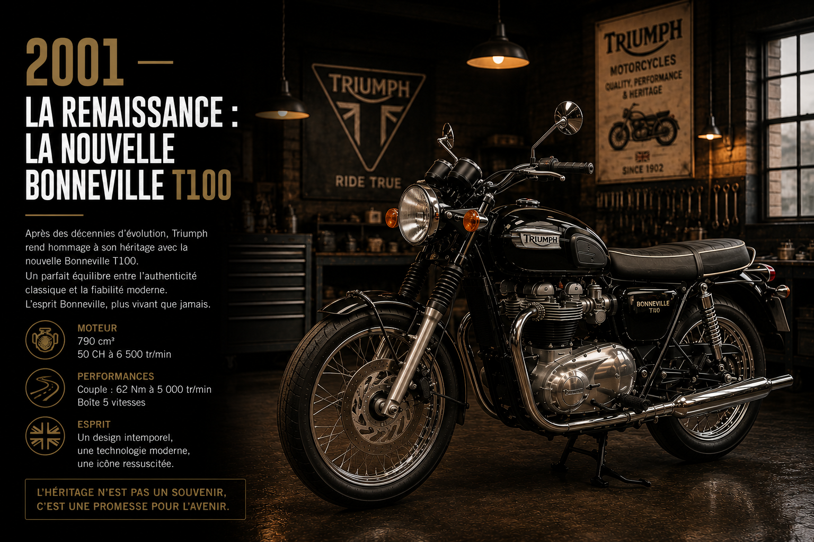
En 2001, Triumph annonce le retour de la Bonneville. C'est l'une des
nouvelles les plus attendues de l'histoire récente du monde de la moto. Les passionnés,
les collectionneurs, les nostalgiques, et même ceux qui n'ont jamais possédé une Bonneville
classique mais en ont rêvé toute leur vie — tous attendent avec une impatience fébrile
de voir ce que Hinckley va proposer.
Ce que Triumph présente dépasse les espérances. La nouvelle Bonneville T100
est d'une fidélité remarquable à l'original. Le réservoir en forme de goutte d'eau est là.
Les ailes rondes sont là. Les deux carburateurs sont là — même si leur technologie est
désormais moderne. Le guidon droit est là. La selle biplace est là. La silhouette générale
est celle de 1959, mais avec la finesse de trait et la qualité de fabrication d'un
constructeur moderne et sûr de lui.
Sous le beau capot classique, la technique est entièrement nouvelle. Le moteur est un
bicylindre parallèle de 790 cm³, refroidi par air, développant
61 chevaux. Il reprend l'architecture du moteur original — deux cylindres
en ligne, arbre à cames en tête, deux soupapes par cylindre — mais dans une conception
moderne intégrant injection électronique et normes d'émissions contemporaines. Le résultat
sonore est bluffant de ressemblance avec l'original : ce battement chaleureux, ce
grondement caractéristique, cette voix qui fait immédiatement sourire.
Le châssis est un double berceau en acier tubulaire, qui rappelle visuellement celui
d'une Bonneville classique mais intègre des points d'ancrage et des géométries optimisés
pour la sécurité et le comportement modernes. La fourche télescopique avant et le mono
amortisseur arrière caché sous la carrosserie apportent un confort et une tenue de route
qu'une moto des années 1960 ne pouvait tout simplement pas offrir.
L'accueil est triomphal — au sens littéral du terme. La presse est unanimement enthousiaste.
Les fans historiques de la marque sont soulagés et heureux. Les nouveaux venus dans l'univers
Triumph sont séduits par cette machine qui a l'air d'avoir traversé le temps sans vieillir.
Les commandes s'accumulent bien avant que la production ne soit lancée. La Bonneville est
de retour, pour de bon, et le monde de la moto s'en réjouit.
2002–2007 — La Famille s'Agrandit
Thruxton, America, Scrambler : la Bonneville se décline
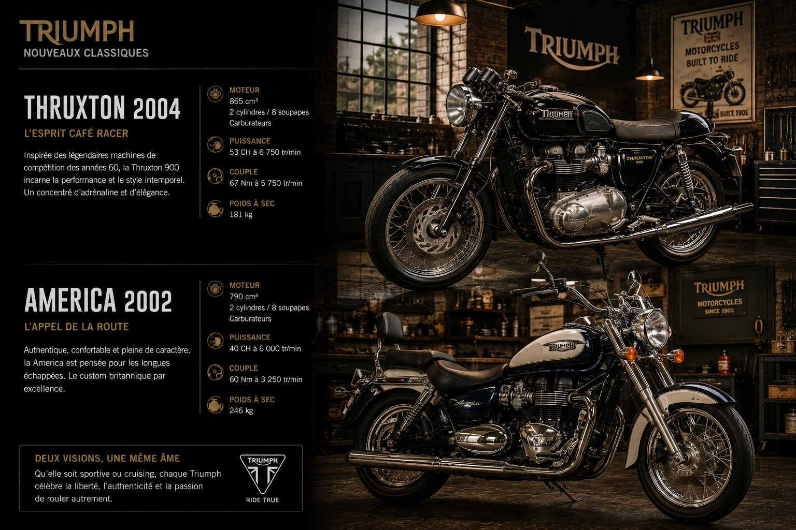
Fort du succès immédiat de la Bonneville T100, Triumph comprend rapidement que la plateforme
classique peut se décliner en plusieurs modèles aux personnalités distinctes. Les années
qui suivent voient apparaître une vraie famille de motos autour de la Bonneville.
En 2002, la Bonneville America fait son retour —
comme dans les années 1970, c'est une Bonneville pensée pour les routes et les goûts
américains : guidon haut et large, position de conduite détendue, roue avant de grand
diamètre, selle basse. Elle sera ensuite rejointe par la Speedmaster,
une version encore plus cruiser dans l'esprit.
En 2004, Triumph ressuscite un autre nom mythique avec la
Thruxton. Inspirée des Bonneville préparées en café-racer pour les
courses de l'époque classique, la Thruxton adopte un guidon bas de type bracelet,
une selle monoplaces avec bulle arrière, et un moteur porté à 865 cm³
et 69 chevaux. C'est une machine à la personnalité tranchée, une
café-racer de série qui ravit immédiatement les amateurs du style.
En 2006, c'est au tour du Scrambler de faire son
apparition. Inspiré des Triumph préparées pour le tout-terrain dans les années 1960 —
les mêmes que Steve McQueen utilisait pour ses aventures hors piste — le Scrambler
adopte un guidon haut, des protections latérales, un silencieux haut placé, et des
pneumatiques semi-cramponnés. Sa silhouette aventureuse et son caractère attachant
en font immédiatement un succès.
La cylindrée du moteur passe à 865 cm³ sur l'ensemble de la gamme
en 2008, apportant plus de couple et de souplesse sans dénaturer
le caractère fondamental du bicylindre.
2016 — La Bonneville Nouvelle Génération : L'Eau Change Tout
Injection d'eau, technologie moderne, âme intacte
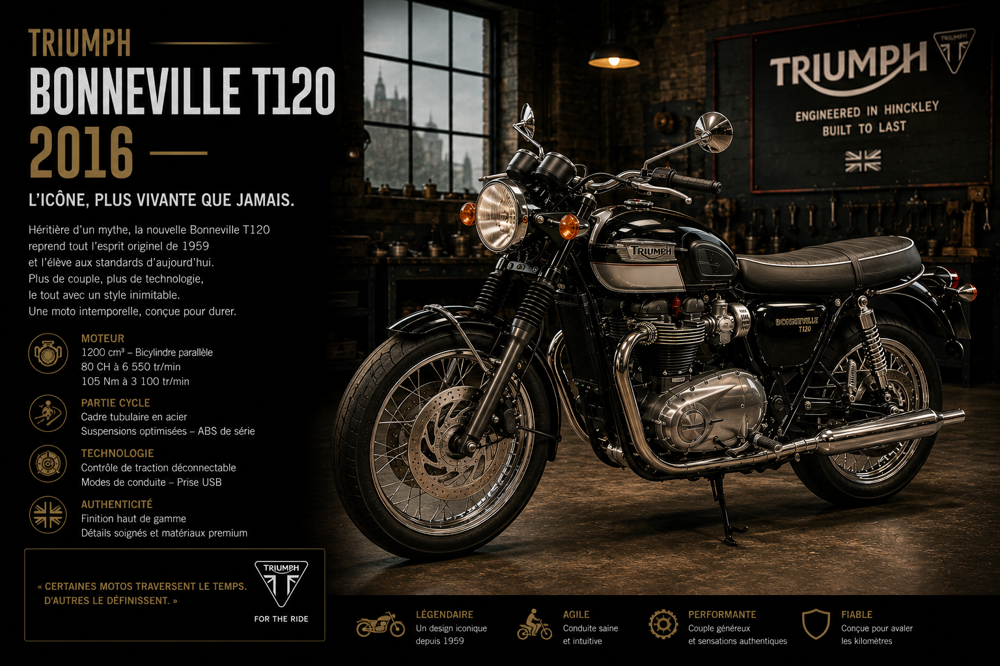
En 2016, Triumph opère la plus grande révolution technique de la
Bonneville moderne depuis son retour en 2001. La gamme est entièrement refondue, avec
une nouveauté de taille qui fait couler beaucoup d'encre : le moteur passe au
refroidissement par eau.
C'est un choix courageux et potentiellement controversé. La Bonneville classique est
refroidie par air depuis 1959 — c'est une partie de son identité visuelle, les ailettes
de refroidissement sur les cylindres étant l'un des éléments esthétiques les plus
caractéristiques du moteur. Passer à l'eau, c'est renoncer à cet élément iconique.
Triumph répond à cette inquiétude avec intelligence : les ailettes de refroidissement
sont conservées sur les cylindres, purement à des fins esthétiques. Le circuit d'eau
est dissimulé dans les parois du moteur, invisible de l'extérieur. La machine conserve
son aspect classique tout en bénéficiant des avantages du refroidissement liquide :
meilleure maîtrise thermique, normes d'émissions plus facilement respectées, températures
de fonctionnement plus stables.
Le moteur est entièrement nouveau. La cylindrée passe à 900 cm³ pour
la Bonneville T100 et 1 200 cm³ pour la
Bonneville T120 — le modèle haut de gamme qui reprend le nom mythique
de la Bonneville originale de 1959. Le T120 développe 80 chevaux et
un couple de 105 Nm. Ces chiffres représentent une progression
significative par rapport aux générations précédentes.
L'injection électronique remplace définitivement les carburateurs sur l'ensemble de
la gamme. Deux modes de conduite sont disponibles — Road et Rain. L'ABS est de série.
Des ports USB de charge sont intégrés discrètement. La connectivité avec l'application
smartphone Triumph est possible. La Bonneville entre pleinement dans le XXIe siècle
tout en conservant son âme du XXe.
La gamme 2016 comprend également une nouvelle Thruxton R, la
Street Twin — version plus accessible et plus légère de la Bonneville —
et le Bonneville Bobber, un custom minimaliste et radical dans l'esprit
des préparations hot-rod américaines des années 1950. Chaque modèle a sa personnalité
propre, mais tous partagent les mêmes fondamentaux mécaniques et le même ADN visuel
hérité de 1959.
2016 — La Thruxton R : La Café-Racer Ultime
Le café-racer le plus désirable du monde moderne
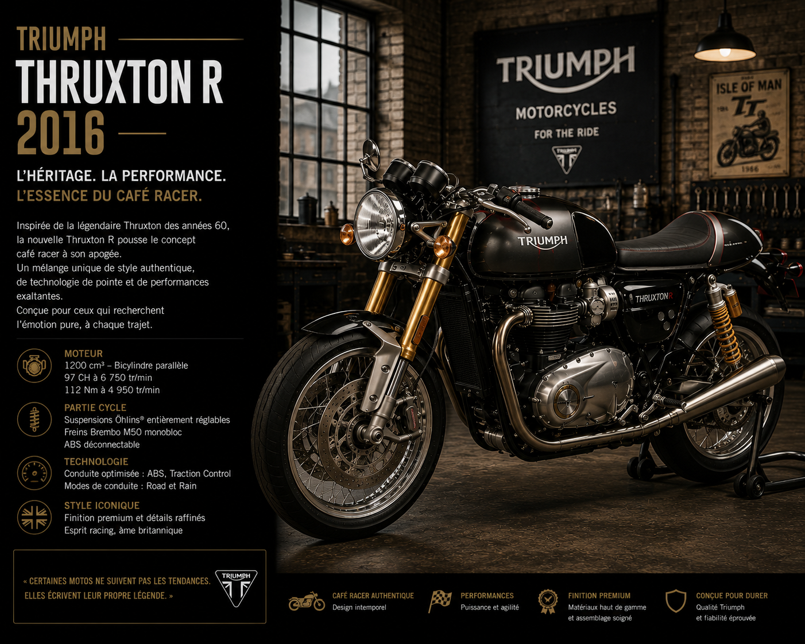
Dans la nouvelle gamme 2016, la Thruxton R mérite une attention
particulière. Elle représente l'expression la plus pure et la plus extrême du style
café-racer dans la production Triumph contemporaine.
Elle reprend le moteur 1 200 cm³ de la T120 mais revu spécifiquement pour privilégier
les hauts régimes : 97 chevaux avec une courbe de puissance orientée
vers le sport. Ses suspensions entièrement réglables — une fourche inversée à l'avant,
des amortisseurs Öhlins à l'arrière — et ses freins Brembo en font une machine redoutable
sur les routes sinueuses.
Son design est saisissant : bulle en plexiglas minimaliste, guidon de type bracelet,
selle en cuir façon vintage, silencieux sport montés haut. La Thruxton R ressemble à
une moto de course des années 1960 préparée par un artisan passionné — mais avec la
fiabilité et les performances d'une machine moderne. Elle est peut-être la plus belle
moto produite par Triumph dans l'ère Hinckley.
2017 — Le Bonneville Bobber : Le Custom Britannique par Excellence
Minimalisme radical et style intemporel
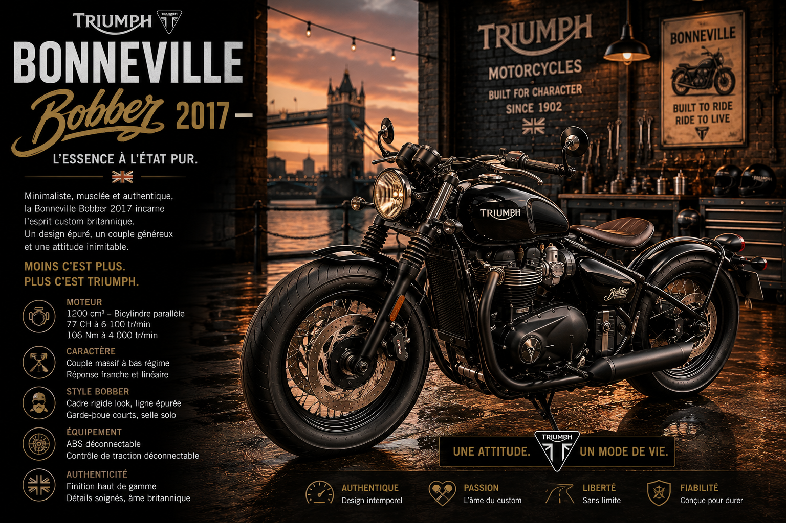
En 2017, Triumph pousse la déclinaison de la plateforme Bonneville
dans une direction radicalement nouvelle avec le Bonneville Bobber.
Ce custom minimaliste s'inspire directement des préparations "bobber" américaines des
années 1940 et 1950 — ces motos auxquelles on retirait tout le superflu pour ne garder
que l'essentiel, et qu'on rabaissait au maximum pour une attitude menaçante et racée.
Le Bonneville Bobber de Triumph est une réinterprétation moderne de cette philosophie.
La roue avant de 19 pouces est étroite et haute. La roue arrière de
16 pouces est large et basse, enveloppée d'un garde-boue en acier
qui rase la gomme. La selle est une pièce unique, basse, directement inspirée des
selles "solo" des motos américaines d'après-guerre. Le guidon est bas et large.
Le moteur 1 200 cm³ est ici mis en scène comme une pièce maîtresse : il est visible,
exposé, chromé avec soin. Les silencieux courts et larges sortent des deux côtés du
moteur dans un style old-school immédiatement reconnaissable. La sonorité est profonde,
caverneuse, primitive dans le bon sens du terme.
Le Bonneville Bobber sera suivi en 2018 par le Bobber Black,
une version encore plus sombre et plus radicale avec un traitement noir mat sur toutes
les pièces habituellement chromées, et une puissance légèrement augmentée. Les deux
versions rencontrent un succès commercial important et une adhésion enthousiaste
de la presse et des passionnés.
2019–2020 — Les Éditions Gold Line et les Séries Limitées
Quand Triumph célèbre son patrimoine avec éclat
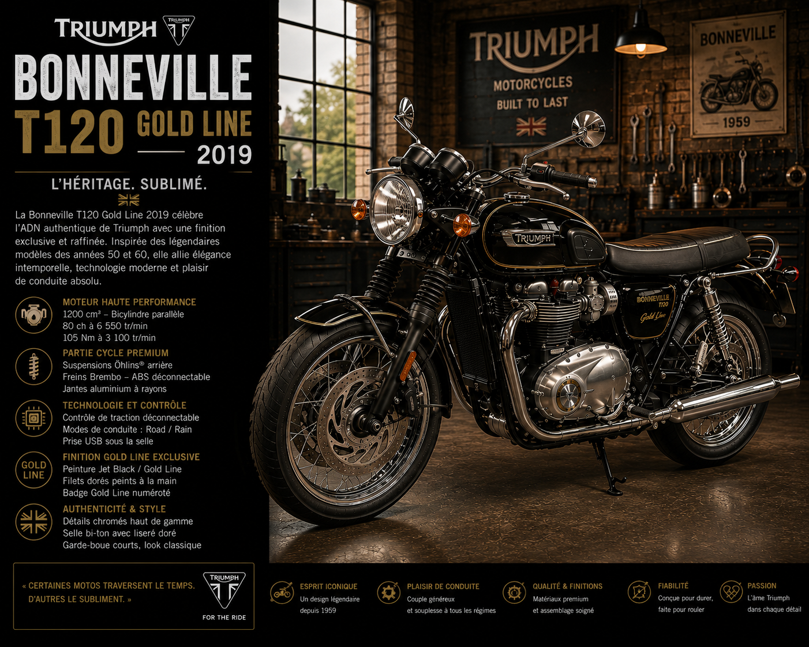
En 2019, Triumph marque les 60 ans de la Bonneville
avec une série d'éditions spéciales particulièrement soignées. La plus remarquable est
sans doute la Bonneville T120 Gold Line, qui reprend la tradition des
filets dorés peints à la main qui ornaient les réservoirs des Bonneville classiques
des années 1960.
Ces filets dorés, tracés par des artisans spécialisés dans un savoir-faire que l'industrie
moderne a presque perdu, donnent à la T120 Gold Line un raffinement et une élégance
incomparables. Chaque moto est légèrement différente des autres — c'est la nature du
travail à la main. Le soin apporté aux finitions, la qualité des peintures, le traitement
des pièces chromées atteignent un niveau rarement vu sur une moto de série.
La Gold Line est produite en nombre limité et trouve preneur très rapidement. Elle incarne
parfaitement la capacité de Triumph à combiner héritage historique et production contemporaine
de qualité — un équilibre que peu de constructeurs dans le monde savent maintenir aussi
bien.
La Bonneville Aujourd'hui — Une Famille, Une Légende
La gamme la plus complète de l'histoire du modèle
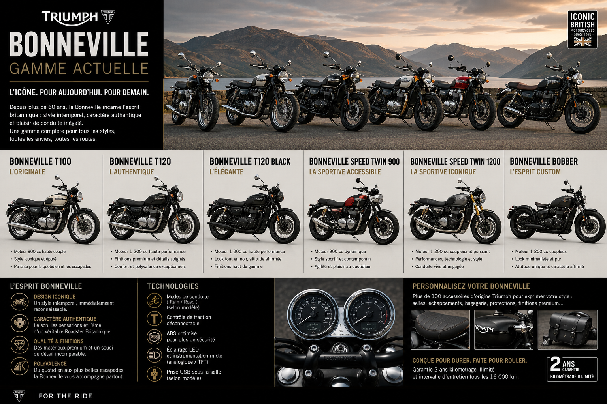
Aujourd'hui, la Bonneville n'est plus un modèle unique — c'est une famille
complète qui décline la même philosophie et la même esthétique en une dizaine
de modèles distincts, chacun avec sa personnalité propre, ses forces particulières,
son caractère unique.
La Street Twin ouvre la gamme avec le moteur 900 cm³ dans un packaging
léger et accessible — la Bonneville pour tous, la porte d'entrée idéale dans l'univers
de la marque. La Bonneville T100 est le modèle classique par excellence,
celui qui se rapproche le plus de l'original de 1959 dans sa philosophie équilibrée.
La Bonneville T120 est le vaisseau amiral de la gamme, le plus puissant,
le plus équipé, le plus raffiné.
La Thruxton RS pousse le concept café-racer dans ses derniers
retranchements avec des suspensions Öhlins, des freins Brembo et une puissance
portée à 105 chevaux. Le Scrambler 1200 est devenu
une machine véritablement capable hors des sentiers battus, avec des suspensions à
long débattement et une préparation tout-terrain sérieuse. Le Bonneville Bobber
et le Speedmaster couvrent le segment custom avec style et caractère.
Toutes ces machines partagent les mêmes valeurs fondamentales : la beauté d'une ligne
classique, le plaisir d'un bicylindre parallèle au caractère affirmé, la qualité de
fabrication d'un constructeur qui prend soin de chaque détail. Elles sont différentes
dans leur usage, mais identiques dans leur âme.
L'ADN Bonneville — Ce Qui Ne Change Jamais
Soixante-cinq ans de constantes inviolables
Depuis 1959, les technologies ont changé, les modes ont changé, les goûts ont changé.
Mais certaines choses dans la Bonneville n'ont jamais bougé — et ne bougeront jamais.
Ce sont ces invariants qui font l'identité profonde du modèle.
Le bicylindre parallèle. Jamais de quatre cylindres, jamais de
monocylindre, jamais de V-twin. Le bicylindre parallèle d'Edward Turner, créé en 1938,
est l'architecture moteur de toutes les Bonneville sans exception. Sa sonorité, son
couple, sa façon de délivrer la puissance sont indissociables de l'identité du modèle.
Changer ce moteur, ce serait changer la Bonneville en quelque chose d'autre.
La ligne classique britannique. Réservoir en goutte d'eau, selle
biplace, ailes arrondies, guidon droit — les grandes lignes de la silhouette Bonneville
n'ont pas fondamentalement changé depuis 1959. Les détails ont évolué, les matériaux
ont changé, les finitions ont progressé — mais la silhouette générale reste immédiatement
reconnaissable pour quelqu'un qui a connu les Bonneville originales.
L'équilibre comme philosophie. La Bonneville n'a jamais été la moto
la plus rapide, la plus légère ou la plus puissante de sa génération. Ce n'est pas
son ambition. Son ambition, depuis toujours, est d'être la moto la plus juste
— celle où tout est en équilibre parfait, où la puissance correspond au châssis, où
le style correspond au caractère, où l'agrément de conduite prime sur les performances
brutes. Cet équilibre est sa marque de fabrique absolue.
L'accessibilité à la passion. Contrairement à la Speed Triple ou à la
Daytona qui requièrent une certaine expérience, la Bonneville a toujours été pensée
pour être accessible. Elle invite, elle accueille, elle ne punit pas. On peut s'y initier,
progresser, se perfectionner — et ne jamais en avoir assez. C'est la moto du premier
jour et du dernier jour, celle qu'on ressort à 70 ans avec le même plaisir qu'à 20.
La Bonneville et la Culture — Une Moto dans l'Histoire du Monde
Quand une machine devient un symbole universel
Peu d'objets manufacturés peuvent se targuer d'avoir une présence culturelle aussi forte
et aussi durable que la Bonneville. Elle dépasse largement le cadre du monde de la moto
pour s'inscrire dans l'histoire de la culture populaire mondiale du XXe et du XXIe siècle.
Au cinéma, la liste des apparitions de la Bonneville est interminable. De La Grande
Évasion (1963) aux productions contemporaines, elle incarne à l'écran la liberté,
le style, la rébellion élégante. Les directeurs artistiques qui cherchent une moto pour
habiller un personnage charismatique et indépendant choisissent neuf fois sur dix
une Bonneville.
Dans la musique, de Bob Dylan à The Who, des Rolling Stones aux groupes contemporains,
la Bonneville est associée à une certaine idée de la liberté créatrice et de l'authenticité
artistique. Elle est la moto des artistes qui ne font pas semblant.
Dans le monde du café-racer et de la customisation, la Bonneville est sans doute la base
la plus utilisée au monde. Des milliers de préparateurs, du garage amateur à l'atelier
professionnel renommé, ont transformé des Bonneville en chefs-d'œuvre personnalisés.
Des Triumph de collection issues de cette tradition de customisation atteignent régulièrement
des prix extraordinaires dans les ventes aux enchères spécialisées.
Épilogue — La Bonneville, Pour Toujours et À Jamais
Soixante-cinq ans. Soixante-cinq ans que la Bonneville existe, qu'elle évolue, qu'elle
se réinvente sans jamais se trahir. Soixante-cinq ans que des hommes et des femmes sur
tous les continents tombent amoureux de cette machine au premier regard, et ne s'en
remettent jamais tout à fait.
La Bonneville a traversé des guerres commerciales, une faillite, seize ans d'absence,
une renaissance miraculeuse, une révolution technologique complète. Elle a survécu à
tout. Pas en se cachant, pas en se transformant en quelque chose qu'elle n'est pas,
mais en restant elle-même — obstinément, magnifiquement elle-même.
Il y a des gens qui possèdent une Bonneville depuis trente ans et qui la sortent encore
tous les dimanches avec la même excitation qu'au premier jour. Il y a des gens qui ont
vendu la leur il y a vingt ans et qui le regrettent encore. Il y a des gens qui n'en
ont jamais eu mais qui savent déjà que leur prochaine moto en sera une.
Ce n'est pas de la fidélité à une marque. C'est quelque chose de plus profond, de plus
personnel. C'est la reconnaissance que certaines choses, dans ce monde qui change si vite,
méritent d'être préservées. Que la beauté d'une ligne classique, le son d'un bicylindre
britannique, le plaisir d'une conduite simple et directe — tout cela a une valeur qui
ne se mesure ni en chevaux ni en euros.
La Bonneville est une moto. Mais c'est aussi une promesse. Celle que les choses
essentielles durent.
For the Ride. Since 1959.